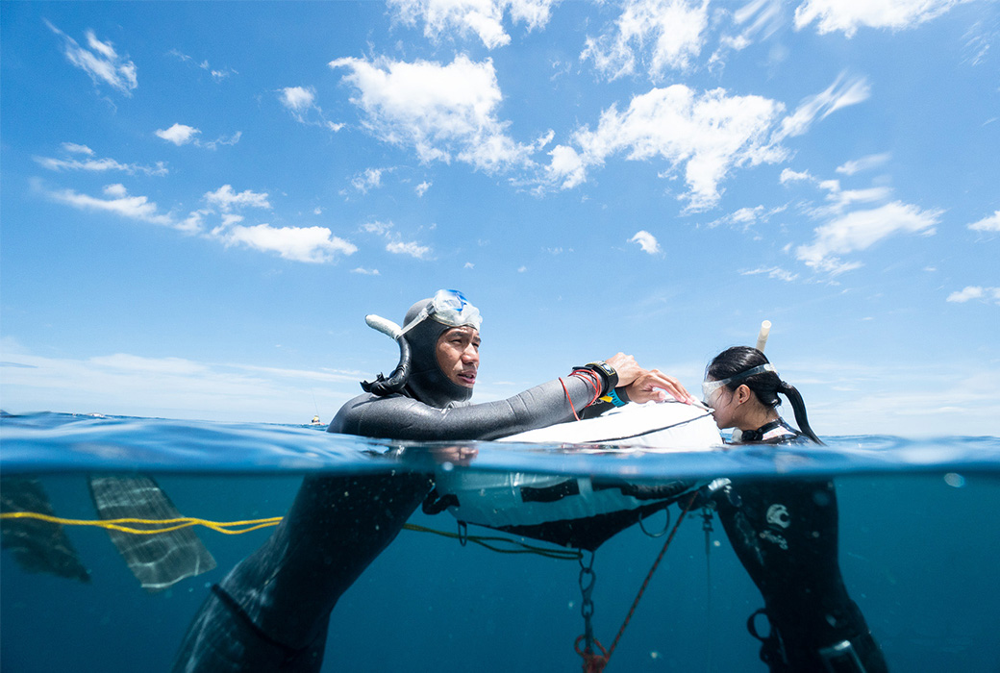

潮汐對潛水計畫的重要性 !

編輯部 2020/07/01
學了自由潛水之後，會開始關心天氣、海象預報。尤其當你要打算出門潛水時，可能就會打開中央氣象局、Windy、Windguru等網站，查詢天氣、波浪等預報，來思考該下哪個潛點，計畫潛水行程。不過對於潮汐資訊，通常是潛水員比較容易忽略的，但潮汐對於潛水計畫不重要嗎？
潮汐是因為月亮、太陽和地球間的天文引力作用，造成海水平面有著週期性的高低變化。海平面在最低點時稱為乾潮（低潮），最高點則增為滿潮（高潮），由低潮到高潮的過程稱為漲潮，反之稱為退潮，滿潮與乾潮間的水位差則稱為潮差。
環境評估
在每個區域的水中環境都各有不同，如溫度、能見度、水的動態、潛水的場地，這些可能需要使用不同的潛水裝備及技術，所以在潛水前，必須先了解該地區可能影響潛水的重要因素及潛水方式。